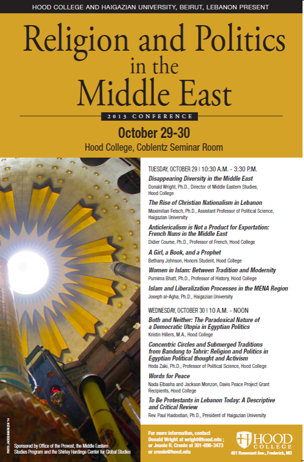

Hood College
En coordination avec Haigazian University,
Beirut, Liban
Organisateur

Discours officiels
“Documenting Human Rights Violations in Iraq”
le 16 avril 2017
Kennedy Center for International Affairs
Brigham Young University
conférences
"De la tanagra à l'hystérie: dégénérescence et décadence du modèle antique"
juin 2010
Université de Paris IV, Sorbonne
Musée de la parole et du geste de Paris
Conférence - Les Paradigmes de l'âme
Un enregistrement est disponible à crp19.org
"The Spatiality of Power: Gentrification, Urbanism and Political Display of Power"
le 10 mars 2015
Beirut, Liban
Haigazian University
"The Legality of Profiling at the end of the Obama Era"
le 11 mars 2015
Beirut, Liban
Haigazian University
Cours magistral sur le droit américain et ses effets sur les peuples du Moyen-Orient
"Disappearing Diversity in the Middle East"
Octobre 2013
Hood College, Frederick, MD
Discours d'ouverture de la conférences internationale
"Religion and Politics in the Middle East"
"Collecting at the Turn of the 20th Century"
avril 2010
The Pennsylvania State University
cours magistral
"Marble Statues and Degenerate Bodies:
Decadence and the Neo-classical ruins of North Africa"
avril 2010
The Pennsylvania State University
discours officiel
Conférences
"A Quantitative Analysis of Rural to Urban Migration in Morocco"
du 31 mai au 3 juin 2023
Université de Brno, République Czech
25ème conférence annuelle de l'Association des études méditerranéennes
"The Not-So-Smart City: The Importance of Heritage Building and the History of Gourna, Egypt"
du 16 mars 2023
Dialogues autour du Moyen-Orient - The Dupont Circle Conversation, Washington, D.C.
The Policy Studies Organization (IPSONET)
"A Small Palace about 144 Square Feet on the Road to Mecca Second Left
After the Garden of Eden: Le Corbusier's Construct of Self in Baghdad's Gymnasium
and Sports Complex"
du 10 mai au 3 juin 2019
Institut des études méditerranéennes Rethymnos, Crete
22ème conférence annuelle de l'Association des études méditerranéennes
"Constructing the Individual: Urban Development in the Eastern Mediterranean"
du 29 mai au 3 juin 2018
Sant-Anna Institute Sorrento, Italy
21ème conférence annuelle de l'Association des études méditerranéennes
"Lost in the Medieval Labyrinth: Colonial Urbanism in Morocco’s Imperial Cities"
du 20 au 24 mai 2015
Université d'Athènes, Grèce
18ème conférence annuelle de l'Association des études méditerranéennes
"How to Build a Museum: Museumography and the Classical World During the Third Republic in France"
octobre 2011
Université de Pennsylvanie
Nineteenth-Century French Studies Association
"Between East and West: Visions of the Orient in Proust"